СП 513.1325800.2022 «Анкерные крепления к бетону. Правила проектирования»
О документе: разработчики, утверждение, регистрация, ключевые слова
СВОД ПРАВИЛ СП 513.1325800.2022
Издание официальное
- 1 ИСПОЛНИТЕЛЬ -Акционерное общество «Научноисследовательский центр «Строительство» (АО «НИЦ «Строительство») Научно-исследовательский, проектно-конструкторский и технологический институт бетона и железобетона им. А.А. Гвоздева (НИИЖБ им. А.А. Гвоздева)
- 2 ВНЕСЕН Техническим комитетом по стандартизации ТК 465 «Строительство»
- 3 ПОДГОТОВЛЕН к утверждению Департаментом градостроительной деятельности и архитектуры Министерства строительства и жилищнокоммунального хозяйства Российской Федерации (Минстрой России)
г.
- 4 УТВЕРЖДЕН приказом Министерства строительства и жилищнокоммунального хозяйства Российской Федерации от 24 марта 2022 № 188/пр и введен в действие с 25 апреля 2022 г.
- 5 ЗАРЕГИСТРИРОВАН Федеральным агентством по техническому регулированию и метрологии (Росстандарт)
В случае пересмотра (замены) или отмены настоящего свода правил соответствующее уведомление будет опубликовано в установленном порядке. Соответствующая информация, уведомление и тексты размещаются также в информационной системе общего пользования -на официальном сайте разработчика (Минстрой России) в сети Интернет
© Минстрой России, 2022
Настоящий нормативный документ не может быть полностью или частично воспроизведен, тиражирован и распространен в качестве официального издания на территории Российской Федерации без разрешения Минстроя России
Дата введения - 2022-04-25
УДК 624.012.3/4(083.13) ОКС 91.080.40
Ключевые слова: анкер, анкерные крепления, бетонные и железобетонные конструкции, расчетные значения, прочностные и деформационные характеристики анкера
ОРГАНИЗАЦИЯ РАЗРАБОТЧИК
АО «НИЦ «Строительство»
по научной работе АО «НИЦ «Строительство», А.И. Звездов
Заместитель генерального директора д.т.н.
РУКОВОДИТЕЛЬ РАЗРАБОТКИ:
Директор НИИЖБ им. А.А. Гвоздева, Д.В. Кузеванов
к.т.н.
ОТВЕТСТВЕННЫЙ ИСПОЛНИТЕЛЬ:
Заведующий лабораторией №2 НИИЖБ им. А.А. Гвоздева, к.т.н.
А.Н. Болгов
Введение
6 ВВЕДЕН ВПЕРВЫЕ
Настоящий свод правил разработан в целях соблюдения требований Федерального закона от 30 декабря 2009 г. № 384-ФЗ «Технический регламент о безопасности зданий и сооружений» с учетом требований Федерального закона от 27 декабря 2002 г. № 184-ФЗ «О техническом регулировании» и содержит требования к расчету и конструированию анкерных креплений к бетонным и железобетонным конструкциям.
Свод правил разработан авторским коллективом АО «НИЦ «Строительство» - НИИЖБ им. А.А. Гвоздева (руководитель работы - канд. техн. наук А.Н. Болгов ; канд. техн. наук Д.В. Кузеванов , канд. техн. наук С.И. Иванов , канд. техн. наук А.В. Невский ).
АНКЕРНЫЕ КРЕПЛЕНИЯ К БЕТОНУ Правила проектирования
Anchoring to concrete. Design rules
1Область применения
2Нормативные ссылки
В настоящем своде правил использованы нормативные ссылки на следующие документы:
ГОСТ 5781-82 Сталь горячекатаная для армирования железобетонных конструкций. Технические условия
ГОСТ 27751-2014 Надежность строительных конструкций и оснований. Основные положения
ГОСТ 31937-2011 Здания и сооружения. Правила обследования и мониторинга технического состояния
ГОСТ 34028-2016 Прокат арматурный для железобетонных конструкций. Технические условия
ГОСТ Р 56731-2015 Анкеры механические для крепления в бетоне. Методы испытаний
ГОСТ Р 57787-2017 Крепления анкерные для строительства. Термины и определения. Классификация
ГОСТ Р 58387-2019 Анкеры клеевые для крепления в бетон. Методы испытаний
СП 16.13330.2017 СНиП II-23-81* Стальные конструкции (с изменениями № 1, № 2)
СП 20.13330.2016 «СНиП 2.01.07-85* Нагрузки и воздействия» (с изменениями № 1, № 2, № 3)
СП 27.13330.2017 «СНиП 2.03.04-84 Бетонные и железобетонные конструкции, предназначенные для работы в условиях воздействия повышенных и высоких температур» (с изменением № 1)
- СП 63.13330.2018 «СНиП 52-01-2003 Бетонные и железобетонные конструкции. Основные положения» (с изменением № 1)
Примечание - При пользовании настоящим сводом правил целесообразно проверить действие ссылочных документов в информационной системе общего пользования -на официальном сайте федерального органа исполнительной власти в сфере стандартизации в сети Интернет или по ежегодному информационному указателю «Национальные стандарты», который опубликован по состоянию на 1 января текущего года, и по выпускам ежемесячного информационного указателя «Национальные стандарты» за текущий год. Если заменен ссылочный документ, на который дана недатированная ссылка, то рекомендуется использовать действующую версию этого документа с учетом всех внесенных в данную версию изменений. Если заменен ссылочный документ, на который дана датированная ссылка, то рекомендуется использовать версию этого документа с указанным выше годом утверждения (принятия). Если после утверждения настоящего свода правил в ссылочный документ, на который дана датированная ссылка, внесено изменение, затрагивающее положение, на которое дана ссылка, то это положение рекомендуется применять без учета данного изменения. Если ссылочный документ отменен без замены, то положение, в котором дана ссылка на него, рекомендуется применять в части, не затрагивающей эту ссылку. Сведения о действии сводов правил целесообразно проверить в Федеральном информационном фонде стандартов.
3Термины, определения и обозначения
В настоящем своде правил применены термины по СП 63.13330, ГОСТ Р 57787, а также следующие термины с соответствующими определениями:
- 3.1.1 анкер с контролем момента затяжки
- Распорный анкер, у которого распор создается за счет крутящего момента, действующего на винт, болт или гайку.
- 3.1.2 анкер с контролем перемещения
- Распорный анкер, у которого распор достигается за счет контролируемого перемещения конуса расклинивания относительно втулки.
- 3.1.3 анкер-шуруп
- Механический анкер, закрепление которого в основании осуществляется за счет вкручивания в просверленное отверстие с врезанием кромок резьбы в материал основания.
- 3.1.4 опорная пластина крепежной детали
- Металлическая пластина, прилегающая к поверхности бетонного основания, в опорной части прикрепляемого конструктивного элемента служит для передачи и перераспределения усилий на анкеры.
- 3.1.5 бетонное основание
- Несущая или ограждающая бетонная или железобетонная конструкция, которая воспринимает передаваемые на нее нагрузки.
- 3.1.6 распорный анкер
- Механический анкер, закрепление которого в основании осуществляется за счет принудительного расширения в просверленном отверстии.
- 3.1.7 клеевой анкер (химический)
- Анкер, состоящий из стального элемента и клеевого состава, в котором передача усилий со стального элемента на основание осуществляется через клеевой состав.
- 3.1.8 эффективная глубина анкеровки
- Размер, соответствующий заглублению части анкера, посредством которой он передает усилия на основание. Примечание - Измеряется от поверхности основания или удаленного от поверхности сечения для клеевых анкеров в специально оговоренных случаях.
- 3.1.9 технический паспорт на анкер
- Документ, содержащий необходимую для проектирования и применения анкера информацию, полученную по результатам испытаний. В настоящем своде правил применены следующие обозначения (см. рисунки 3.1-3.2): Геометрические характеристики a 1 -расстояние между осями крайних анкеров смежных групп или между осями одиночных анкеров в направлении 1; a 2 -расстояние между осями крайних анкеров смежных групп или между осями одиночных анкеров в направлении 2; c расстояние от оси анкера до края основания (краевое расстояние); c 1 -расстояние от оси анкера до края основания в направлении 1 (для анкера, работающего на сдвиг, направление 1 выбирают перпендикулярно краю в направлении сдвигающего усилия); c 2 -расстояние от оси анкера до края основания в направлении 2 (направление 2 выбирают перпендикулярно направлению 1); d диаметр анкерного болта или диаметр резьбы; d 1 -диаметр установочного отверстия для анкера с уширением; d 2 -рабочий диаметр анкера с уширением; df -диаметр установочного отверстия в опорной пластине крепежной детали; dnom внешний диаметр механического и стального элемента клеевого анкера (номинальный диаметр для стержневой арматуры); d 0 -диаметр отверстия для установки анкера; h толщина бетонного основания; h 1 -наибольшая глубина пробуренного отверстия; hef -эффективная глубина анкеровки; h min -минимальная толщина бетонного основания; hnom общая длина заделки анкера в основание; h o - глубина цилиндрической части пробуренного отверстия; l f -приведенная глубина анкеровки при сдвиге; s 1 -расстояние (шаг) между осями анкеров в группе в направлении 1; s 2 -расстояние (шаг) между осями анкеров в группе в направлении 2; t fix -толщина опорной пластины крепежной детали. N растягивающая сила, действующая вдоль оси анкера; V сдвигающая сила, действующая перпендикулярно оси анкера; M изгибающий момент. Nan - растягивающее усилие в одиночном анкере; Van сдвигающее усилие в одиночном анкере; Nan , tot -растягивающее усилие в анкерной группе; Van , tot -сдвигающее усилие в анкерной группе. Nult -предельное значение осевого растягивающего усилия в одиночном анкере или анкерной группе; Vult -предельное значение сдвигающего усилия в одиночном анкере или анкерной группе. а - анкерная группа; б - одиночный анкер Рисунок 3.1 - Обозначение параметров взаимного расположения анкеров а отверстия под анкеры; б , в механические анкеры с контролем момента затяжки; г - механический анкер с контролем перемещения; д , е , ж - клеевые анкеры; и , к - механические анкеры с уширением Рисунок 3.2 Основные типы анкеров и обозначения
4Классификация анкеров
- механические;
- клеевые;
- комбинированные (распорно-клеевые).
- стальные;
- пластиковые;
- клеевые.
- предустановленные (закладные);
- установленные по месту, в предварительно просверленные отверстия.
- распорные;
- с уширением;
- анкер-шурупы.
- с контролем момента затяжки;
- с контролем перемещения.
5Требования к проектированию. Общие положения
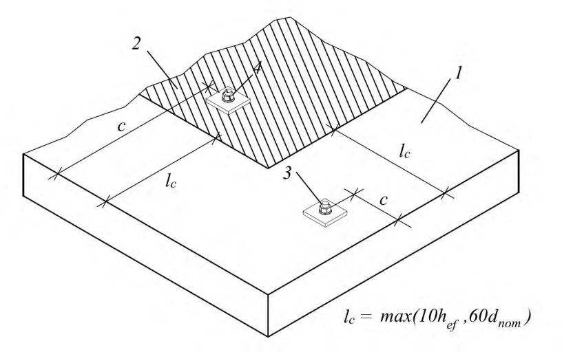
1 зона размещения анкеров вблизи от края; 2 зона размещения анкеров вдали от края; 3 анкер, расположенный вблизи от края ( c < l c ) ; 4 анкер, расположенный вдали от края ( c ≥ l c ); l c -расстояние, определяющее границу зоны размещения анкеров вблизи от края
Рисунок 5.1 Зоны размещения анкеров в основании
При расчете группы анкеров учитывается перераспределение усилий между анкерами, при этом в анкерную группу должны входить только анкеры одного типа и размера.
Рисунок 5.2 Основные формы расстановки анкеров в группе
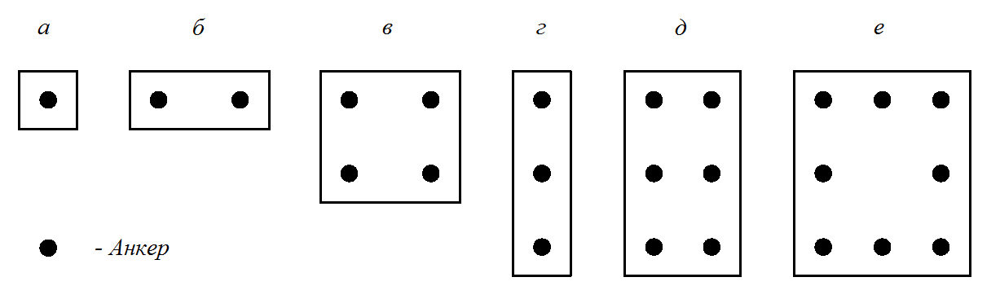
Таблица 5.1
| Диаметр анкера d 1) или d nom 2) , мм | 6 | 8 | 10 | 12 | 14 | 16 | 18 | 20 | 22 | 24 | 27 | 30 | >30 |
|---|---|---|---|---|---|---|---|---|---|---|---|---|---|
| Диаметр установочного отверстия в опорной пластине крепежной детали d f , мм | 7 | 9 | 12 | 14 | 16 | 18 | 20 | 22 | 24 | 26 | 30 | 33 | 1,1 d 1,1 d nom |
| Максимальный зазор в отверстии, мм | 1 | 1 | 2 | 2 | 2 | 2 | 2 | 2 | 2 | 2 | 3 | 3 | 0,1 d 0,1 d nom |
6Определение усилий в анкерах
где a 3 - расстояние, определяющее податливость заделки, принимается: a 3 = d /2 в общем случае; a 3 = 0, если установлена шайба с гайкой, прилегающие к бетону основания, как показано на рисунке 6.2, б, где d диаметр анкера ( dnom , если усилие передается на гильзу/втулку анкера); e l - расстояние между сдвигающей силой и поверхностью бетонного основания; α M - безразмерный коэффициент, зависящий от степени защемления анкера в опорной пластине крепежной детали (см. рисунок 6.3). При отсутствии защемления или в запас несущей способности α M = 1,0. При полном защемлении, когда поворот прикрепляемой детали невозможен и выполняются требования 5.8, принимается α M = 2,0. Анкер считается защемленным в прикрепляемой детали, если ее прочность достаточна для восприятия момента от защемления анкера.
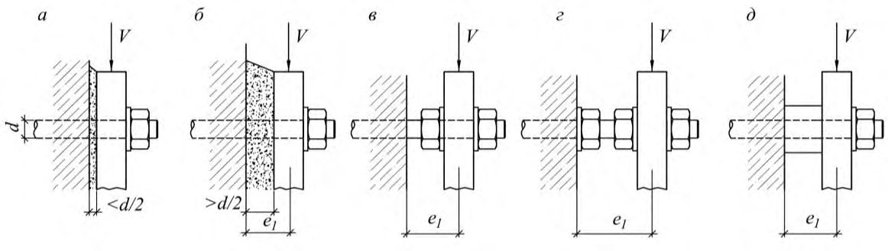
а - вплотную к основанию; б - вплотную с увеличенным выравнивающим слоем; в - с зазором; г - с зазором и установкой дополнительной гайки к бетону; д - через гильзу
Рисунок 6.1 - Варианты установки опорной пластины крепежной детали
Рисунок 6.2 Схема для определения плеча сдвигающей силы
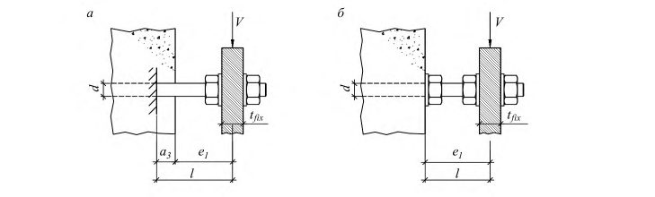
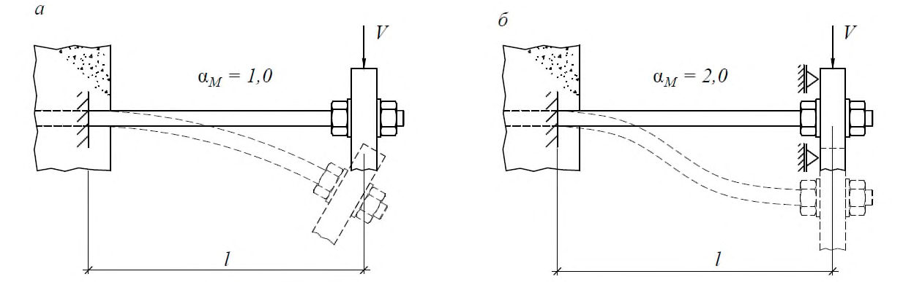
а с защемлением только у основания; б с защемлением у основания и прикрепляемой конструкции
Рисунок 6.3 Расчетная схема для определения степени защемления анкера
- а) опорная пластина крепежной детали должна быть стальной сплошного сечения по высоте анкера;
- б) опорная пластина крепежной детали должна прилегать к бетону основания без какого-либо промежуточного слоя или с выравнивающим слоем раствора прочностью на сжатие не ниже 30 МПа, толщиной не более d /2 ( d - диаметр анкера или dnom , если усилие передается на гильзу/втулку анкера);
- в) диаметр установочных отверстий в опорной пластине крепежной детали не должен превышать значений, установленных в таблице 5.1.
- а) анкеры и анкерные группы расположены вдали от края согласно 5.5;
- б) опорная пластина крепежной детали прилегает к бетону основания с выравнивающим слоем раствора толщиной не более d /2;
- в) отсутствуют знакопеременные или динамические воздействия на прикрепляемую деталь.
Максимальная сдвигающая сила, воспринимая за счет трения, определяется по формуле
где Nb - сила прижатия опорной детали к основанию;
- µ - коэффициент трения, принимаемый равным 0,25.
Определение усилий в группе анкеров при растяжении
- а) опорная плита крепежной детали принимается абсолютно жесткой согласно 6.11;
- б) работа анкеров на сжатие не учитывается, за исключением случая монтажа опорной плиты с зазором к основанию;
- в) связь между деформациями и напряжениями в бетоне подчиняется линейному закону деформирования, при этом максимальные напряжения бетонного основания не должны превышать расчетного сопротивления бетона на сжатие;
- г) модуль упругости и расчетное сопротивление бетонного основания принимаются согласно СП 63.13330;
- д) связь между деформациями и усилиями в анкере подчиняется линейному закону деформирования, с учетом фактической жесткости анкера. Уравнение зависимости принимается по формуле
где CN -коэффициент жесткости анкера при растяжении, кН/м, -принимается согласно 8.9;
, Nan i -перемещение анкера вдоль оси.
Жесткость всех анкеров в составе группы принимается одинаковой.
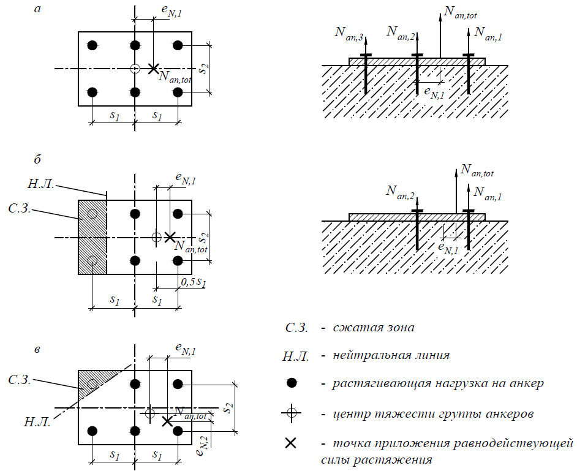
а - эксцентриситет в одном направлении, все анкеры растянуты; б - эксцентриситет в одном направлении, растяжение только для части анкеров; в - эксцентриситет в двух направлениях, растяжение только для части анкеров
Рисунок 6.4 - Примеры распределения растягивающих усилий в анкерной группе
Рисунок 6.5 Схема усилий и деформаций в расчетном сечении анкерного крепления
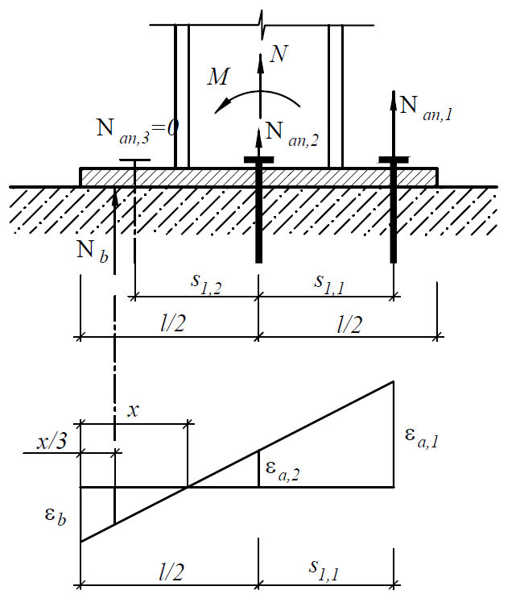
Рисунок 6.6 Схема возникновения дополнительных усилий для гибких опорных плит
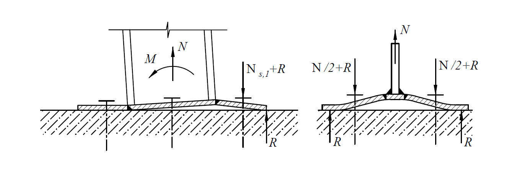
Определение усилий в анкерной группе при сдвиге
- эксцентриситет относительно центра тяжести анкерной группы и угол, соответствующий направлению усилия Van , tot .
- а) для случаев разрушения по стали и выкалыванию бетона за анкером, если установочные отверстия в опорной плите крепежной детали не превышают значений, приведенных в таблице 5.1, распределение сдвигающих усилий следует принимать равномерным между всеми анкерами (см. рисунок 6.7);
- б) для случая разрушения от откалывания края основания при действии сдвигающего усилия поперек края, усилие или его компоненты следует распределять наиболее невыгодным образом только на крайние анкеры (см. рисунок 6.8).
- в) для случая разрушения от откалывания края основания при действии сдвигающего усилия параллельно краю, усилие или его компоненты следует распределять равномерно на все анкеры, при этом в анкерную группу включают только крайние анкеры (см. рисунок 6.8).
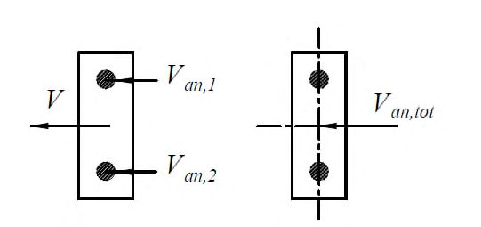
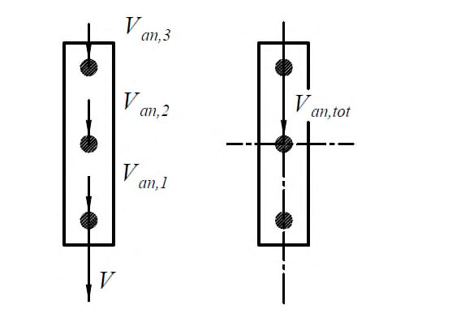
Рисунок 6.7 - Примеры равномерного распределения сдвигающих усилий в анкерной группе
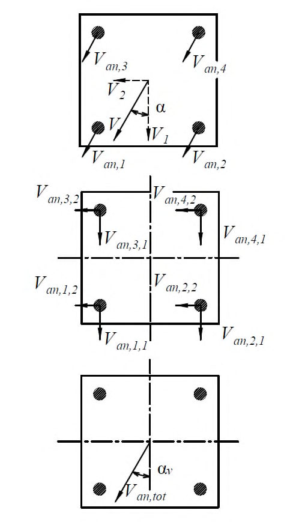
Рисунок 6.8 - Примеры распределения сдвигающих усилий в анкерной группе для расчетов при откалывании края основания
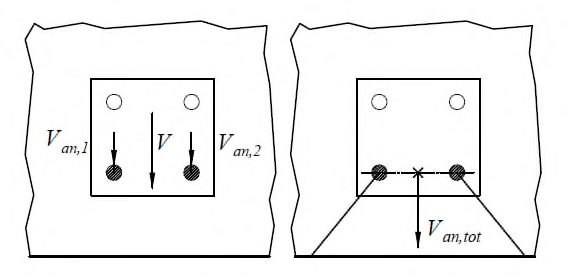
а
Рисунок 6.9 - Пример распределения сдвигающих усилий в анкерной группе при действии крутящего момента
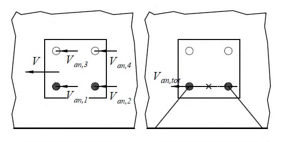
а
Рисунок 6.10 - Примеры учета направлений сдвигающих усилий в анкерной группе для расчетов при откалывании края основания
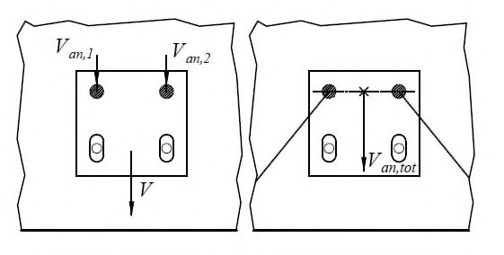
7Расчет по предельным состояниям первой группы
Расчет по предельным состояниям первой группы (по прочности) производят по предельным усилиям из условия, что усилия в анкере (анкерной группе) от внешних сил не должны превышать предельного усилия в анкере (анкерной группе) для соответствующего механизма разрушения (см. рисунки 7.1-7.2).
Условия прочности при действии на анкерное крепление растягивающих усилий приведены в таблицах 7.1, 7.2, сдвигающих усилий - в таблице 7.3. Условия прочности при совместном действии на анкерное крепление растягивающих и сдвигающих усилий приведены в подразделе 7.3.
Таблица 7.1 -Условия прочности для механических и комбинированных анкеров при действии растягивающих усилий
| Анкерная группа | Анкерная группа | ||
|---|---|---|---|
| Механизм разрушения | Одиночный анкер | Наиболее нагруженный анкер группы | Вся группа |
| По стали анкера | N an ≤ N ult , s (7.1.1.1) | N an ,max ≤ N ult , s (7.1.1.2) | |
| По контакту с основанием | N an ≤ N ult , p (7.1.2.2) | N an ,max ≤ N ult , p (7.1.2.3) | |
| От выкалывания бетонного основания | N an ≤ N ult , c (7.1.3.1) | N an , tot ≤ N ult , c (7.1.3.2) | |
| От раскалывания основания | N an ≤ N ult , sp (7.1.4.1) | N an , tot ≤ N ult , sp (7.1.4.2) |
Примечание - 7.1.2.1 - при расчете распорно-клеевых анкеров; 7.1.2.2 - при расчете механических анкеров.
Таблица 7.2 Условия прочности для клеевых анкеров при действии растягивающих усилий
| Анкерная группа | Анкерная группа | ||
|---|---|---|---|
| Механизм разрушения | Одиночный анкер | Наиболее нагруженный анкер группы | Вся группа |
| По стали анкера | N an ≤ N ult , s (7.1.1.1) | N an ,max ≤ N ult , s (7.1.1.2) | |
| От выкалывания бетонного основания | N an ≤ N ult , c (7.1.3.1) | N an , tot ≤ N ult , c (7.1.3.2) | |
| Комбинированное - по контакту анкера с основанием и выкалыванию бетонного основания | N an ≤ N ult , p (7.1.5.2) | N an , tot ≤ N ult , p (7.1.5.3) | |
| Разрушение от раскалывания основания | N an ≤ N ult , sp (7.1.4.1) | N an , tot ≤ N ult , sp (7.1.4.2) |
Таблица 7.3 Условия прочности для механических и клеевых анкеров при сдвиге
| Анкерная группа | Анкерная группа | ||
|---|---|---|---|
| Механизм разрушения | Одиночный анкер | Наиболее нагруженный анкер группы | Вся группа |
| Разрушение по стали анкера | V an ≤ V ult , s (7.2.1.1) | V an , max ≤ V ult , s (7.2.1.2) | |
| Разрушение от выкалывания бетонного основания за анкером | V an ≤ V ult , cp (7.2.2.1) | V an , i ≤ V h ult , cp (7.2.2.4) | V an , tot ≤ V ult , cp (7.2.2.2) |
| Разрушение от откалывания края основания | V an ≤ V ult , c (7.2.3.1) | V an , tot ≤ V ult , c (7.2.3.2) |
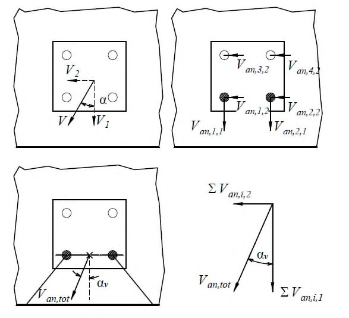
Рисунок 7.1 Виды разрушения анкеров при действии растягивающих усилий а - разрушение по стали анкера без плеча силы; б - разрушение по стали анкера с плечом силы; в разрушение от выкалывания бетонного основания за анкером для одиночного анкера; г - разрушение от откалывания края основания
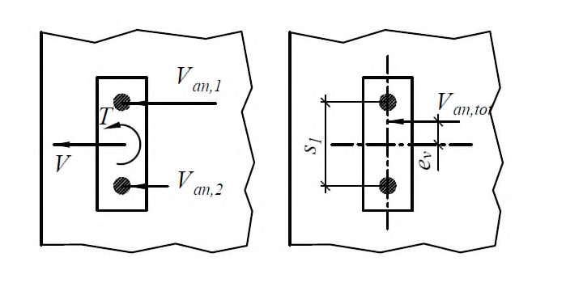
Рисунок 7.2 Виды разрушения анкеров при действии сдвигающих усилий 7.1 Расчет анкеров при действии растягивающих усилий 7.1.1 Расчет по прочности при разрушении по стали
- 7.1.1.1 Расчет прочности по стали для одиночного анкера при действии растягивающих усилий выполняют из условия
где Nan - растягивающее усилие в одиночном анкере;
N ult , s - по 7.1.1.3.
- 7.1.1.2 Расчет прочности по стали для группы анкеров при действии растягивающих усилий выполняют из условия
где Nan ,max - растягивающее усилие в наиболее нагруженном анкере анкерной группы;
- 7.1.1.3 Предельное растягивающее усилие из условий прочности по стали Nult , s определяют по формуле
где Nn , s - нормативное значение силы сопротивления анкера при разрушении по стали, принимаемое в зависимости от типа и марки анкера по ТП; γ Ns - коэффициент надежности по стали при растяжении, принимаемый в зависимости от типа и марки анкера согласно ТП.
Примечание - Для арматуры А400 по ГОСТ 5781, А500 по ГОСТ 34028 рекомендуемое значение коэффициента γ Ns = 1,25.
7.1.2 Расчет по прочности при нарушении сцепления анкера с основанием
- 7.1.2.1 Расчет по прочности при нарушении сцепления анкера с основанием (по контакту) производят только для механических и распорноклеевых анкеров.
- 7.1.2.2 Расчет по прочности при нарушении сцепления анкера с основанием для одиночного анкера при действии растягивающих усилий производят из условия
где Nan - расчетное значение растягивающего усилия в одиночном анкере; N ult , p - по 7.1.2.4.
- 7.1.2.3 Расчет по прочности при нарушении сцепления анкера с основанием для анкерной группы при действии растягивающих усилий производят из условия
где Nan ,max -расчетное значение растягивающего усилия в наиболее нагруженном анкере анкерной группы;
- 7.1.2.4 Предельное растягивающее усилие из условия прочности сцепления анкера с основанием Nult , p определяют по формуле
где Nn , p - нормативное значение силы сопротивления анкера сцепления с основанием (по контакту), принимаемое в зависимости от типа и марки анкера, а также состояния основания, для которого предназначен анкер (с трещинами, без трещин) по ТП; γ bt - коэффициент надежности по бетону при растяжении, принимаемый 1,5; γ Np - коэффициент условий работы анкера, принимаемый в зависимости от типа и марки анкера по ТП; ψ c - коэффициент, учитывающий фактическую прочность бетонного основания, принимаемый в зависимости от класса бетона на сжатие, типа и марки анкера по ТП.
7.1.3 Расчет по прочности при выкалывании бетонного основания
- 7.1.3.1 Расчет по прочности при выкалывании бетонного основания для одиночного анкера при действии растягивающих усилий производят из условия
где Nan - расчетное значение растягивающего усилия в одиночном анкере; N ult , с - по 7.1.3.3.
- 7.1.3.2 Расчет по прочности при выкалывании бетонного основания для группы анкеров при действии растягивающих усилий производят из условия
где Nan , tot - расчетное значение растягивающего усилия в анкерной группе; N ult , с - по 7.1.3.3.
- 7.1.3.3 Предельное растягивающее усилие из условия прочности при выкалывании бетонного основания Nult , c определяют по формуле
где γ bt -коэффициент надежности по бетону при растяжении, принимаемый 1,5; γ Nс -коэффициент условий работы анкера при выкалывании бетонного основания при растяжении, принимаемый в зависимости от типа и марки анкера по ТП;
0 , n c N -значение силы сопротивления, H, для одиночного анкера, расположенного на значительном удалении от края основания и соседнего анкера, при разрушении от выкалывания бетонного основания, определяемое по формуле
где Rb , n -нормативное сопротивление бетона сжатию, принимаемое по СП 63.13330 в зависимости от класса бетона на сжатие, МПа. h ef -эффективная глубина анкеровки, принимаемая в зависимости от типа и марки анкера по ТП, мм; k
1 -коэффициент, зависящий от состояния основания в зоне анкера, принимаемый равным:
7,9 -при возможном образовании трещин в бетонном основании; 11,3 -при отсутствии трещин в бетонном основании;
, 0 , c N c N A A -отношение, учитывающее влияние межосевого расстояния в анкерной группе и расстояние до края основания;
A c , N фактическая площадь основания условной призмы выкалывания, с учетом влияния соседних анкеров (при s<scr , N ), а также влияния краевого расположения (при c < ccr , N ) - см. рисунок 7.3. Здесь и далее scr , N , сcr , N следует принимать по 7.1.3.4;
0 , c N A -площадь основания условной призмы выкалывания для одиночного анкера, расположенного на значительном удалении от края основания и соседнего анкера (см. рисунок 7.4) следует вычислять по формуле
ψ s , N коэффициент влияния установки у края основания, вычисляемый по формуле
при расположении анкера вблизи от края по нескольким направлениям (угол или торцевой участок основания), значение c в формуле (7.12) следует принимать наименьшим; ψ re , N коэффициент влияния установки в защитном слое густоармированных конструкций, вычисляется по формуле
где hef -эффективная глубина анкеровки, мм; при шаге продольной и (или) поперечной арматуры в зоне установки анкера s ≥ 150 мм ( s ≥ 100 мм при диаметре арматуры d ≤ 10 мм) следует принимать ψ re , N =1,0. ψ eс , N -коэффициент влияния неравномерного загружения анкерной группы, вычисляемый по формуле
где eN ,1 , eN ,2 -эксцентриситет растягивающей силы относительно центра тяжести анкерной группы для соответствующего направления (см. 6.8). Для одиночного анкера ψ eс , N = 1,0.
7.1.3.4 Критическое расстояние между анкерами (межосевое) scr , N , при котором отсутствует влияние соседних анкеров на прочность одиночного анкера для случая разрушения от выкалывания бетонного основания при растяжении, вычисляют по формуле
Критическое краевое расстояние сcr , N , при котором отсутствует влияние близкорасположенного края основания на прочность одиночного анкера для случая разрушения от выкалывания бетонного основания при растяжении, вычисляют по формуле
7.1.3.5 В случае расположения анкеров в стесненных условиях вблизи от края по трем или четырем направлениям (см. рисунок 7.5) расчет по 7.1.3.3 допускается выполнять, принимая в расчетах значение эффективной глубины анкеровки h'ef из условия
где c max -максимальное из краевых расстояний для рассматриваемого анкера или группы (см. рисунок 7.5); s max -максимальное из межосевых расстояний для рассматриваемой группы (см. рисунок 7.5); при этом в расчетах по формулам (7.9)-(7.14) следует применять скорректированные значения критических расстояний , 3 cr N ef s h = ;
а - одиночный анкер у края бетонного основания; б - группа из двух анкеров у края бетонного основания; в - группа из четырех анкеров в углу бетонного основания
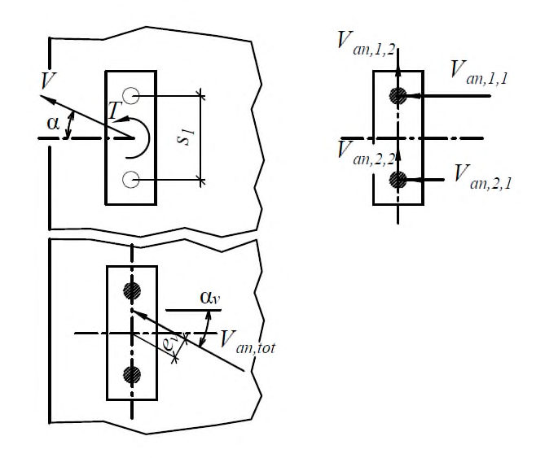
Рисунок 7.3 - Фактическая площадь основания условной призмы выкалывания для одиночных анкеров и анкерных групп при действии растягивающих усилий
Рисунок 7.4 Площадь 0 , c N A основания условной призмы выкалывания при растяжении для одиночного анкера, расположенного на значительном удалении от края основания и соседнего анкера
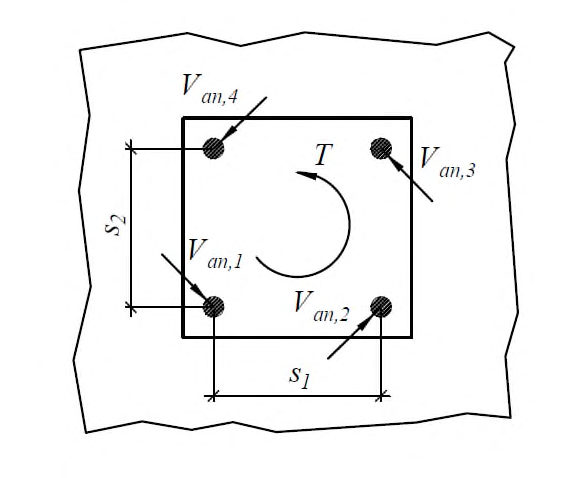
Рисунок 7.5 - Схема расположения анкеров в стесненных условиях
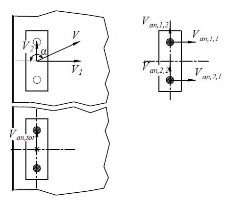
7.1.4 Расчет по прочности при раскалывании бетонного основания
- 7.1.4.1 Расчет по прочности при раскалывании бетонного основания для одиночного анкера при действии растягивающих усилий производят из условия
где Nan расчетное значение растягивающего усилия в одиночном анкере;
N ult , sp -по 7.1.4.3.
- 7.1.4.2 Расчет по прочности при раскалывании бетонного основания для группы анкеров при действии растягивающих усилий производят из условия
где Nan , tot -расчетное значение растягивающего усилия в анкерной группе;
N ult , sp -по 7.1.4.3.
- 7.1.4.3 Предельное растягивающее усилие из условий прочности при раскалывании бетонного основания Nult , sp определяется по формуле
где γ Nsp -коэффициент условий работы анкера при разрушении от раскалывания основания при растяжении, принимаемый в зависимости от типа и марки анкера по ТП;
N sp n , c -значение силы сопротивления при раскалывании основания, вычисляемое, как Nult ,с по формуле (7.9) с использованием вместо величин scr , N , сcr , N критических расстояний scr , sp , сcr , sp , и γ Nс= 1,0;
- s cr , sp -критическое межосевое расстояние, при котором отсутствует влияние соседних анкеров на прочность одиночного анкера для случая разрушения раскалывания бетонного основания при растяжении;
- c cr , sp -критическое краевое расстояние для анкера, при котором отсутствует влияние близкорасположенного края основания на прочность одиночного анкера для случая разрушения от раскалывания бетонного основания при растяжении.
Величины scr , sp , сcr , sp принимают в зависимости от типа и марки анкера по ТП; ψ h , sp -коэффициент, учитывающий фактическую толщину основания при раскалывании, вычисляемый по формуле
где h фактическая толщина основания; h min -минимальная толщина основания, принимаемая в зависимости от типа и марки анкера по ТП; h ef -эффективная глубина анкеровки, принимаемая в зависимости от типа и марки анкера по ТП.
- 7.1.4.4 Допускается не рассматривать разрушение основания от раскалывания при выполнении следующих условий:
- а) краевое расстояние во всех направлениях c ≥ с cr , sp -для одиночного анкера и c ≥ 1,2 ·с cr , sp -для анкерной группы, при этом толщина элемента основания h ≥ 2· hef ;
- б) расчетная ширина раскрытия трещин в основании не превышает 0,3 мм, при этом раскалывающее усилие в бетоне воспринимается армированием:
- не менее 60 % при Nan ≤ 30 кН;
- на 100 % при Nan > 30 кН.
Примечание - Раскалывающее усилие в основании может быть принято в зависимости от осевого растягивающего усилия в анкере Nan :
- а) для анкеров с контролем момента затяжки - 1,5 Nan ;
- б) для анкеров с уширением - 1,0 Nan ;
- в) для анкеров с контролем перемещения - 2,0 Nan ;
- г) для клеевых анкеров - 0,5 Nan .
7.1.5 Расчет по прочности при комбинированном разрушении при нарушении сцепления анкера с основанием и выкалыванию бетонного основания
- 7.1.5.1 Расчет по прочности при комбинированном разрушении при нарушении сцепления анкера с основанием и выкалыванию бетонного основания производят только для клеевых анкеров.
- 7.1.5.2 Расчет по прочности при комбинированном разрушении при нарушении сцепления анкера с основанием и выкалыванию бетонного основания для одиночного анкера при действии растягивающих усилий производят из условия
где Nan расчетное значение растягивающего усилия в одиночном анкере;
N ult , p -по 7.1.5.4.
- 7.1.5.3 Расчет по прочности при комбинированном разрушении при нарушении сцепления анкера с основанием и выкалыванию бетонного основания для группы анкеров при действии растягивающих усилий производят из условия
где Nan , tot -растягивающее усилие в анкерной группе;
N ult , p -по 7.1.5.4.
- 7.1.5.4 Предельное растягивающее усилие из условий прочности при комбинированном разрушении при нарушении сцепления анкера с основанием и выкалыванию бетонного основания Nult , p определяют по формуле
где γ bt -коэффициент надежности по бетону при растяжении, принимаемый 1,5; γ Np коэффициент условий работы анкера, принимаемый в зависимости от типа и марки анкера по ТП;
0 , n p N -значение силы сопротивления для одиночного анкера, расположенного на значительном удалении от края основания и соседнего анкера, при комбинированном разрушении при нарушении сцепления анкера с основанием и выкалывании бетонного основания, определяемое по формуле
где τ n -нормативное значение сцепления клеевого анкера с бетоном В25, принимаемое в зависимости от типа анкера, а также состояния основания, для которого предназначен анкер - с трещинами τ n , rc , либо без трещин в основании τ n , urc по ТП; h ef -эффективная глубина анкеровки; d nom внешний диаметр анкера или номинальный диаметр арматуры; hef , dnom принимаемые в зависимости от типа и марки анкера по ТП;
, 0 , p N p N A A -отношение, учитывающее влияние межосевого расстояния в анкерной группе и краевого расстояния;
A p , N фактическая площадь основания условной призмы выкалывания, с учетом влияния соседних анкеров (при s<scr , Np ), а также влияния краевого расположения (при c<ccr , Np ). Здесь и далее scr , Np , с cr , Np принимают по 7.1.5.5.
Примечание - Правила определения фактической площади основания выкалывания бетона для комбинированного разрушения аналогичны правилам определения площади выкалывания бетона Ac , N по рисунку 7.4 с использованием вместо величин scr , N , сcr , N критических расстояний scr , Np , сcr , Np .
0 , p N A -площадь основания условной призмы выкалывания для одиночного анкера, расположенного на значительном удалении от края основания и соседнего анкера, вычисляют по формуле
ψ c -коэффициент, учитывающий фактическую прочность бетонного основания, принимают в зависимости от класса бетона на сжатие и от типа и марки анкера по ТП; ψ g , Np коэффициент учета групповой работы клеевых анкеров, принимаемый согласно 7.1.5.6.
Коэффициенты ψ s , N , ψ re , N , ψ ec , N принимают по формулам (7.12)-(7.14) соответственно с использованием вместо величины сcr , N критического расстояния сcr , Np .
- 7.1.5.5 Критическое расстояние между анкерами (межосевое) scr , Np , мм, при котором отсутствует влияние соседних анкеров на прочность одиночного анкера для случая комбинированного разрушения при нарушении сцепления анкера с основанием и бетонного основания при растяжении, следует определять по формуле
где τ n , urc -нормативное значение сцепления клеевого анкера с бетоном В25 без трещин, Н/мм² ; d nom внешний диаметр анкера или номинальный диаметр арматуры, мм.
Критическое краевое расстояние сcr , Np , при котором отсутствует влияние близкорасположенного края основания на прочность одиночного анкера для случая комбинированного разрушения при нарушении сцепления анкера с основанием и выкалывании бетонного основания при растяжении, принимают по формуле
- 7.1.5.6 Коэффициент учета групповой работы клеевых анкеров ψ g , Np вычисляют по формуле
где 0 , g Np -базовый коэффициент учета групповой работы клеевых анкеров вычисляют по формуле
где 0 , g Np -безразмерная величина; τ
- n -нормативное значение сцепления клеевого анкера с бетоном В25, принимаемое по ТП в зависимости от типа анкера и состояния основания, для которого предназначен анкер - с трещинами τ n , rc , либо без трещин в основании τ n , urc , Н/мм² ; ψ
- c -коэффициент, учитывающий прочность бетонного основания, принимаемый в зависимости от класса бетона на сжатие и типа и марки анкера по ТП; h d ef -эффективная глубина анкеровки, мм; nom внешний диаметр анкера или номинальный диаметр арматуры, мм;
- k 2 -коэффициент, принимаемый в зависимости от состояния основания равным:
- 3,7 - для основания без трещин;
- 2,7 - для основания с трещинами;
R b , n -нормативное сопротивление бетона сжатию, принимаемое по СП 63.13330 в зависимости от класса бетона на сжатие, МПа;
- n -количество анкеров в рассматриваемой анкерной группе (растянутые анкеры);
- s шаг анкеров в анкерной группе; при неравномерной расстановке анкеров принимается усредненное значение шага для группы в целом по двум направлениям.
7.2Расчет анкеров при действии сдвигающих усилий
7.2.1 Расчет по прочности при разрушении по стали
- 7.2.1.1 Расчет по прочности при разрушении по стали для одиночного анкера при действии сдвигающих усилий производят из условия
30 где Van расчетное значение cдвигающего усилия в одиночном анкере;
V ult , s -по 7.2.1.3.
- 7.2.1.2 Расчет по прочности при разрушении по стали для группы анкеров при действии сдвигающих усилий производят из условия
где Van ,max -расчетное значение сдвигающего усилия в наиболее нагруженном анкере анкерной группы;
- 7.2.1.3 Предельное сдвигающее усилие из условия прочности по стали Vult , s определяют в зависимости от условий крепления анкера к основанию (см. 6.3, 6.5):
- для крепления без учета дополнительного момента, обусловленного плечом сдвигающей силы, по формуле
где Vn , s - по 7.2.1.4; λ s - коэффициент, учитывающий условия работы при сдвиге анкера:
- для креплений с одиночным анкером λ s = 1,0;
- для креплений с групповой работой анкеров λ s , принимаемый в зависимости от типа и марки анкера по ТП;
- γ Vs - коэффициент надежности при разрушении анкера по стали при сдвиге, принимаемый в зависимости от типа и марки анкера по ТП;
- для крепления с учетом дополнительного момента, обусловленного плечом сдвигающей силы, по формуле
где Vnm , s - по 7.2.1.5; γ Vs - коэффициент надежности при разрушении анкера по стали при сдвиге, принимаемый в зависимости от типа и марки анкера по ТП;
Примечание - Для арматуры А400 по ГОСТ 5781, А500 по ГОСТ 3408 рекомендуемое значение коэффициента γ Vs = 1,25.
- 7.2.1.4 Нормативное значение силы сопротивления анкера по стали при сдвиге Vn , s без учета дополнительного момента, обусловленного плечом сдвигающей силы, следует принимать в зависимости от типа и марки анкера по ТП.
- 7.2.1.5 Нормативное значение силы сопротивления анкера по стали при сдвиге с учетом дополнительного момента, обусловленного плечом сдвигающей силы, Vnm , s следует определять по формуле
где Mn , s - приведенная величина предельного изгибающего момента для анкера по стали с учетом комбинированного воздействия определяется по формуле где Van , tot V ult , сp - по 7.2.2.3.
где 0 , n s M - нормативное значение предельного изгибающего момента для анкера, принимаемое в зависимости от типа и марки анкера по ТП;
N an - расчетное значение осевой растягивающей силы, действующей на рассматриваемый анкер;
N ult , s - предельное растягивающее усилие, воспринимаемое одиночным анкером из условий прочности по стали по 7.1.1.3; l s - расчетная величина плеча силы по 6.4.
7.2.2 Расчет по прочности при выкалывании бетонного основания за анкером
- 7.2.2.1 Расчет по прочности при выкалывании бетонного основания за анкером для одиночного анкера при действии сдвигающих усилий производят из условия
где Van - расчетное значение сдвигающего усилия в одиночном анкере; V ult , сp - по 7.2.2.3.
7.2.2.2 Расчет по прочности при выкалывании бетонного основания за анкером для группы анкеров при действии сдвигающих усилий производят из условия
- расчетное значение сдвигающего усилия в анкерной группе;
- 7.2.2.3 Предельное сдвигающее усилие из условия прочности при выкалывании бетонного основания за анкером Vult , cp определяют по формуле
где Nult , c - предельное растягивающее усилие из условий прочности при выкалывании бетонного основания, определяемое по 7.1.3.3, при γ Nc =1,0. Для клеевых анкеров принимается не более величины Nult , p , вычисляемой по 7.1.5.4, при γ Np =1,0.
- γ Vсp -коэффициент условий работы анкера при разрушении от выкалывания бетонного основания за анкером при сдвиге, принимаемый в зависимости от типа и марки анкера по ТП; k
- коэффициент, учитывающий глубину анкеровки, принимаемый в зависимости от типа и марки анкера по ТП.
- 7.2.2.4 Проверку прочности от выкалывания бетонного основания за анкером для анкерной группы производят, если силы, действующие на анкерную группу, направлены в одну сторону.
В случае, когда силы, действующие на анкеры рассматриваемой группы, имеют разное направление, проверка прочности производится для каждого анкера в группе в отдельности из условия
где Van , i - расчетное усилие в iм анкере;
, h ult cp V - предельное сдвигающее усилие для отдельного анкера группы при разрушении от выкалывания бетонного основания за анкером, определяемое как для одиночного анкера по 7.2.2.3, принимая вместо величины Ac , N значение ограниченной соседними анкерами фактической площади основания условной призмы выкалывания Acp , N (см. рисунок 7.6).
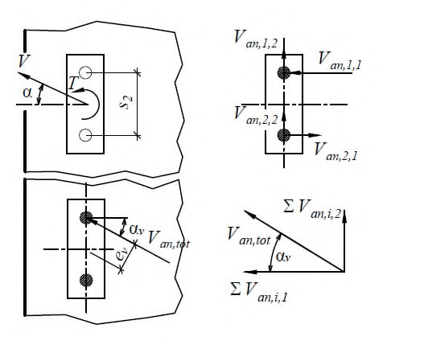
а - анкер в группе вдали от края; б - анкер в группе из двух анкеров у края бетонного основания; в - анкер в группе из четырех анкеров в углу бетонного основания
Рисунок 7.6 - Ограниченная площадь основания условной призмы выкалывания для отдельного анкера группы
7.2.3 Расчет по прочности при откалывании края основания
- 7.2.3.1 Расчет по прочности при откалывании края основания для одиночного анкера при действии сдвигающих усилий производят из условия
где Van - расчетное значение сдвигающего усилия в одиночном анкере;
V ult , с - по 7.2.3.3.
- 7.2.3.2 Расчет по прочности при откалывании края основания для группы анкеров при действии сдвигающих усилий производят из условия
где Van , tot - расчетное значение сдвигающего усилия в анкерной группе;
V ult , с - по 7.2.3.3.
- 7.2.3.3 Предельное сдвигающее усилие из условий прочности при разрушении от откалывания края основания Vult , c определяют по формуле
где γ bt - коэффициент надежности по бетону при растяжении, принимаемый 1,5; γ Vс - коэффициент условий работы анкера при разрушении от откалывания края основания, принимаемый в зависимости от типа и марки анкера по ТП;
0 , n c V - значение силы сопротивления, Н, при разрушении от откалывания края для одиночного анкера, расположенного на значительном удалении от угла основания и соседнего анкера в бетоне с трещиной и без трещины, вычисляемое по формуле
где k 3 - коэффициент, принимаемый в зависимости от состояния основания равным:
2,5 - для основания без трещин;
1,8 - для основания с трещинами; dnom - внешний диаметр анкера или номинальный диаметр арматуры, мм; l f - приведенная глубина анкеровки при сдвиге, принимаемая в зависимости от типа и марки анкера по ТП, мм; с
1 - расстояние от анкера до края основания, мм;
R b , n - нормативное сопротивление бетона, принимаемое по СП 63.13330 в зависимости от класса бетона на сжатие, МПа;
- α - безразмерный коэффициент, вычисляемый по формуле
β - безразмерный коэффициент, вычисляемый по формуле
, 0 , c V c V A A - отношение, учитывающее влияние межосевого расстояния в анкерной группе и краевого расстояния;
A c , V - фактическая площадь основания условной призмы выкалывания с учетом влияния соседних анкеров (при s ≤ 3· с 1), а также влияния углового расположения анкера (при c 2 ≤ 1,5· c 1) и толщины основания (при h ≤ 1,5 ·c 1) (см. рисунок 7.7);
0 , c V A - площадь основания условной призмы выкалывания для одиночного анкера, расположенного на значительном удалении от угла основания и соседнего анкера (см. рисунок 7.8), вычисляемая по формуле
Ψ s , V - коэффициент влияния установки у края основания, вычисляемый по формуле
где с 1 - ближайшее расстояние от оси анкера до края основания в направлении сдвигающей силы; с 2 - расстояние от оси анкера до края основания в перпендикулярном к с 1 направлении (удаление анкера от угла);
Ψ h , V - коэффициент влияния толщины основания, вычисляемый по формуле
где h - фактическая толщина основания; а
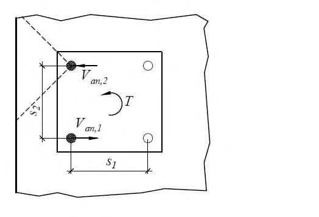
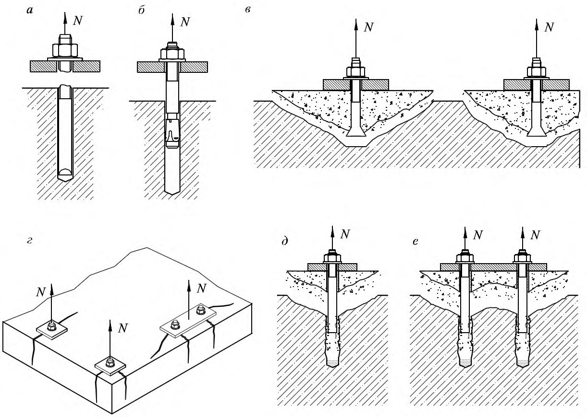
а одиночный анкер в углу бетонного основания; б группа анкеров у края тонкого бетонного основания; в - группа анкеров у края тонкого бетонного основания
Рисунок 7.7 Фактическая площадь основания условной призмы выкалывания для одиночных анкеров и анкерных групп при сдвиге
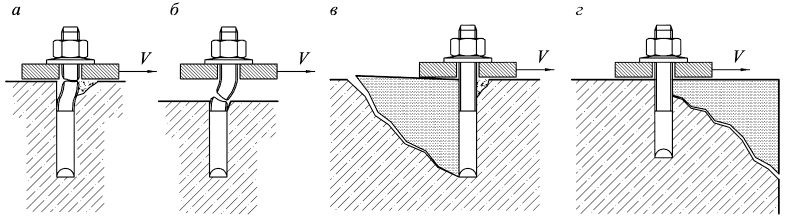
Рисунок 7.8 - Площадь 0 , c V A основания условной призмы выкалывания при сдвиге для одиночного анкера, расположенного на значительном удалении от угла основания и соседнего анкера
Ψα, V - коэффициент учета направления сдвигающей силы, вычисляемый по формуле
где α V - угол между направлением сдвигающей силы и перпендикуляром к рассматриваемому краю плиты, принимаемый от 0° до 90°;
Примечание - Для сдвигающей силы, направленной в противоположную от края сторону (при α V > 90°), учитывается в расчете только компонента, действующая параллельно краю (см. 6.17).
Ψ ec , V - коэффициент влияния неравномерного загружения анкерной группы, вычисляемый по формуле
где eV - эксцентриситет сдвигающей силы, относительно геометрического центра анкерной группы, определяемый согласно 6.13-6.15. Для одиночного анкера Ψ ec , V = 1,0.
Ψ re , V - коэффициент учета армирования основания, принимаемый равным:
- 1,0 - при отсутствии у края обрамляющего армирования и хомутов;
- 1,2 - при наличии у края обрамляющего армирования в виде продольных стержней диаметром вдоль края ≥ 12 мм;
- 1,4 - при наличии у края обрамляющего армирования и часто установленных хомутов с шагом s ≤ 100 мм.
- 7.2.3.4 Расчет анкеров, расположенных вблизи углов, при разрушении от откалывания края основания следует выполнять, рассматривая краевое расположение в двух направлениях независимо (см. рисунок 7.9).
- 7.2.3.5 В случае расположения анкеров в тонком основании ( h ≤ 1,5 c 1 ) либо в стесненных условиях (вблизи от края по трем направлениям, при с 2,1 ≤ 1,5 c 1 и с 2,2 ≤ 1,5 c 1 -(см. рисунок 3.1, б )), расчет по 7.2.3.3 допускается выполнять, вычисляя площади Aс , V и 0 , c V A с использованием приведенного расстояния до края сred вместо величины с 1. Приведенное расстояние сred
Рисунок 7.9 - Расчетные схемы при проверке откалывания края основания вблизи угла
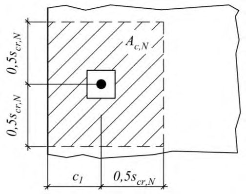
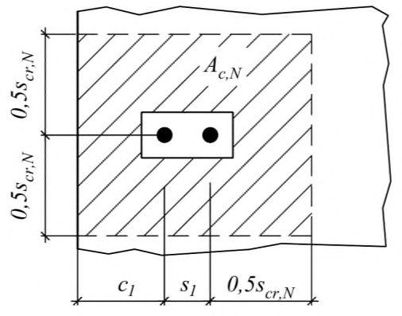
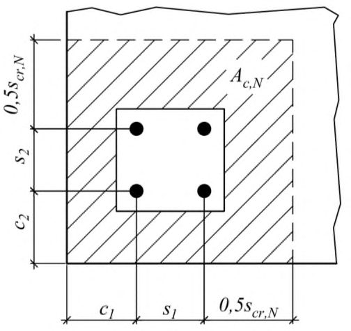
следует принимать по формуле (7.52), но не менее h /1,5 и не менее s 2/3 для анкерной группы
где с 2,max - наибольшее из расстояний с 2,1 , с 2,2 (см. рисунок 3.1, б ); s
2 - межосевое расстояние для анкерной группы; h
- фактическая толщина основания.
- 7.2.3.6 Для одиночных анкеров и анкерных групп, установленных вдали от края основания (согласно 5.5), проверку прочности при разрушении от откалывания края основания допускается не проводить.
7.3Расчет анкеров по прочности при совместном действии растягивающих и сдвигающих усилий
где β N -коэффициент, определяемый как наибольшая величина из отношений расчетных усилий к величине предельного усилия для каждого предусмотренного в 7.1.1-7.1.5 механизма разрушения при действии растягивающих сил:
где Nan - расчетные значения растягивающего усилия в анкере или анкерной группе Nan , tot , устанавливаемые при расчетах в зависимости от механизма разрушения;
N ult - предельное усилие на растяжение для анкера или анкерной группы в зависимости от механизма разрушения, устанавливаемое при расчетах по 7.1.1-7.1.5; β V -коэффициент, определяемый как наибольшая величина из отношений расчетных усилий к величине предельного усилия для каждого предусмотренного в 7.2.1-7.2.3 механизма разрушения при сдвиге
где V an - расчетные значения сдвигающего усилия в анкере или анкерной группе ( Van , tot ), устанавливаемые при расчетах в зависимости от механизма разрушения;
V ult - предельное сдвигающее усилие для анкера или анкерной группы в зависимости от механизма разрушения, вычисляемое по 7.2.1-7.2.3.
8Расчет по предельным состояниям второй группы (по деформациям)
где δ - перемещение анкера в уровне соединения с опорной пластиной крепежной детали от действия внешней нагрузки; δ ult - значение предельно допускаемого перемещения, обусловленного только деформациями анкера, устанавливаемого с учетом расчетных, конструктивных, технологических и эстетикопсихологических требований, предъявляемых к анкерному креплению.
для случая длительного нагружения по формуле
где Nan - усилие в анкере от нормативных значений нагрузок;
СN ,0 - коэффициент жесткости анкера при растяжении (кратковременный);
СN ,∞ - коэффициент жесткости анкера при растяжении (длительный); коэффициенты СN ,0 , СN , ∞ определяются согласно 8.9.
для случая длительного нагружения по формуле
где Van - усилие в анкере от нормативных значений нагрузок;
СV ,0 - коэффициент жесткости анкера при сдвиге (кратковременный);
СV , ∞ - коэффициент жесткости анкера при сдвиге (длительный); коэффициенты СV ,0 , СV ,∞ определяются согласно 8.10.
где Nсont - контрольное значение силы на анкер; δ N ,0 - перемещения анкера вдоль оси от действия кратковременных растягивающих сил; δ N ,∞ -перемещения анкера вдоль оси от действия длительных растягивающих сил.
Для клеевых анкеров с переменной глубиной заделки жесткость анкеров следует вычислять по формуле
где сN ,0 - коэффициент податливости анкера при действии кратковременных растягивающих сил; сN , ∞ -коэффициент податливости анкера при действии длительных растягивающих сил; dnom - внешний диаметр анкера или номинальный диаметр арматуры; h ef - эффективная глубина анкеровки.
Все указанные выше величины принимаются по ТП в зависимости от типа и марки анкера, состояния основания, для которого предназначен анкер.
где Vсont - контрольное значение силы на анкер; δ V ,0 - перемещения анкера поперек оси от действия кратковременных сдвигающих сил; δ V ,∞ -перемещения анкера поперек оси от действия длительно действующих сдвигающих сил.
Указанные выше величины принимаются по ТП в зависимости от типа и марки анкера.